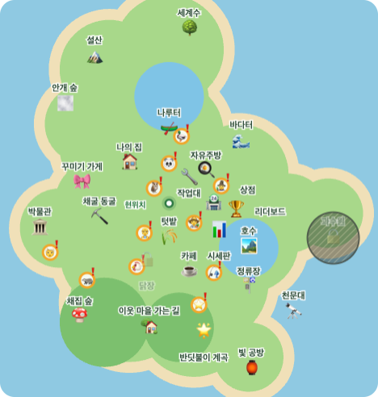

🔨 무대를 북쪽 물가로 · 북쪽 맵 넓히기
아래 그림은 실제 게임 장면을 위에서 렌더링한 것이고, 그 위에 바뀌는 부분을 겹쳐 그렸어요. 카메라는 남쪽에서 북쪽을 보기 때문에 그림 위쪽이 화면 안쪽이에요.
지금 3D 마을 (위에서 본 모습)
지금 마을 지도 (미니맵과 같은 그림)

지금 걸을 수 있는 끝
새로 걸을 수 있는 끝
새 물 / 옮긴 물
무대와 등불 줄
경매 참가 자리
아래 그림은 실제 게임 장면을 위에서 렌더링한 것이고, 그 위에 바뀌는 부분을 겹쳐 그렸어요. 카메라는 남쪽에서 북쪽을 보기 때문에 그림 위쪽이 화면 안쪽이에요.
